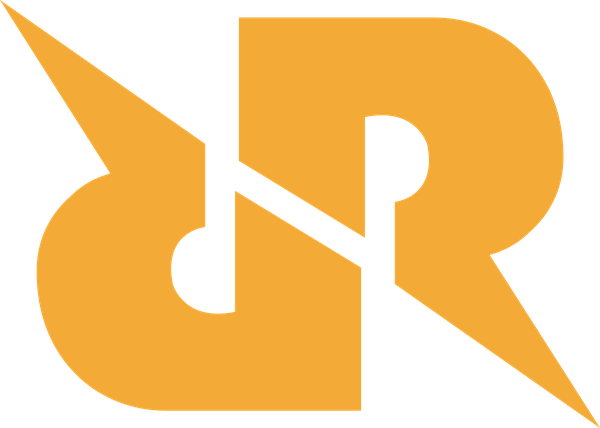

Rex Regum Qeon
レックス・レガム・クオン
インドネシアの熱いファンが有名なチーム。会場や配信の盛り上がりにも注目です。
Overview概要
Players
選手(2026-11-16 時点)報道
crazyguy
イニシエーター(IGL=司令塔)
Jemkin
デュエリスト
xffero
センチネル
Monyet
コントローラー
Kushy
フレックス
History歩み 報道
2013年に設立されたインドネシアのeスポーツ組織で、チーム名はラテン語で「王の中の王」を意味します。VALORANT部門は2020年に始まり、2023年からVCT Pacificのパートナーチーム(リーグに常に参加できる提携チーム)として戦っています。2025年にはVCT Pacific Stage 1で初めてのタイトルを獲得し、2027年からの新しいパートナー枠にも選ばれました。
Playstyleプレースタイル
インドネシア・ベトナム・ロシア出身の選手がそろう多国籍チームです。司令塔のcrazyguy選手を中心に、エースのJemkin選手が撃ち合いで流れをつくる形が特徴です。
2027見どころ
ヘッドコーチが空席のまま迎えるオフシーズンで、新しいコーチ陣と選手の顔ぶれがどう決まるかが2027年の見どころです。
Profile
基本情報- 拠点
- インドネシアを拠点とするeスポーツチームです。 報道
- 2027年
- 2027〜2028年 VCT Pacific パートナー
Roster選手
crazyguyイニシエーター(IGL=司令塔)
Jemkinデュエリスト
xfferoセンチネル
Monyetコントローラー
Kushyフレックス
PLAYER NOTESCLOSE
- crazyguy：2025年3月加入。VLRによると契約は2028年まで。
- Jemkin：2023年10月加入。VLRによると契約は2027年まで。
- xffero：2022年10月加入。VLRによると契約は2028年まで。
- Monyet：2024年5月加入。VLRによると契約は2026年で満了予定で、2027年の去就は未発表。
- Kushy：2024年10月加入(当時の登録名はKush)。VLRによると契約は2026年で満了予定で、2027年の去就は未発表。
Staff
スタッフSeasoNzマネージャー
(未定)ヘッドコーチ(2026年9月にJoviさんが退任。後任は未発表)
Watch
注目選手PlayerJemkin
2025年のPacific Stage 1決勝で活躍した、撃ち合いに強いデュエリストです。
Playercrazyguy
2025年に加入したベトナム出身のベテランで、チームの司令塔(IGL)として作戦を組み立てています。
Results実績
- 2026
Esports World Cup 2026 出場(Pacific予選を突破)
- 2026
VCT 2026 Pacific Kickoff 4位
- 2025
VALORANT Champions 2025(パリ)9〜12位
MORE (3)CLOSE
- 2025
VCT 2025 Pacific Stage 2 準優勝
- 2025
VALORANT Masters Toronto 2025 7〜8位(チーム初の国際大会出場)
- 2025
VCT 2025 Pacific Stage 1 優勝(決勝でGen.Gに3-1。チーム初のVALORANTタイトル)